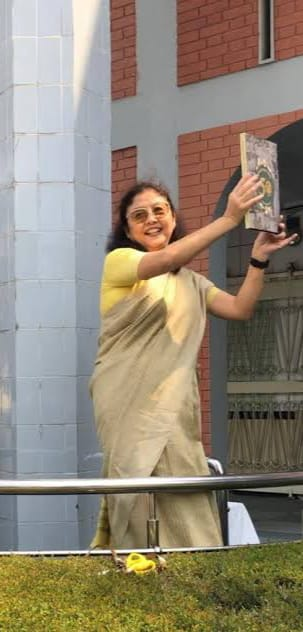

Words from the Founders
MrCharles Mahbert
Life is no brief candle for me.It is a sort of splendid torch which I have got hold of for the moment and i want to make it burn as brightly as possible before handing in on to future generation.
Mrs.Ann Mahbert
Message from the founder Mrs.Ann Mahbert
I know that Gods mercy will always be in Mahbert High School. The School was started in his glorious name for the needy children of Siliguri and its surrounding areas. They celebrated there Golden jubliee in the year 2017 with Gods blessing and the Goodwill of all. So I say, keep up the good work which was started in the year 1967 and may our Heavenly Father direct and guide us always
Charles G .Mahbert
Dear Readers, Just goes to show how hectic and busy life here at Mahbert High School has been. Time and Tide wait for no man... And thats precisely why this delay... Aschool year encompasses so much and trying to capture it all in a single issue is nigh to impossible However kudos to the many budding authors,writers,thinkers,artists and poets in our midst who have made this issue possible.Much has transpired between the last time and this one and we have tried to include it all in whole or in part. Thanks are due in no small measure to all the wonderfull people behind this effort. heres wishing all of you Happy Reading... May you enjoy whatever has been encapsulated within the pages of life.
Principal
Jennifer A. Mahbert
Message from the Principle Jennifer A. Mahbert
It is a pleasure and a privilage to be a part of the mahbert family. The result, another volume of the schools progress being chronicled to showcase the littereary and artistic talents of our young students. i sincerly pray for each of our students who will one day become the manifestation of their budding dreams, and for the further growth and success of yet another academic year.